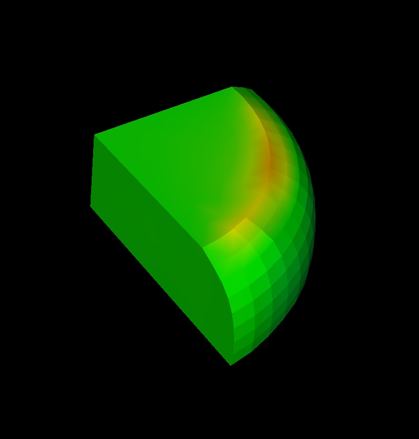
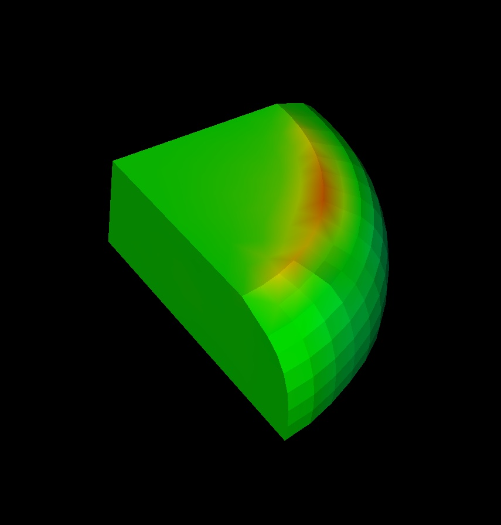
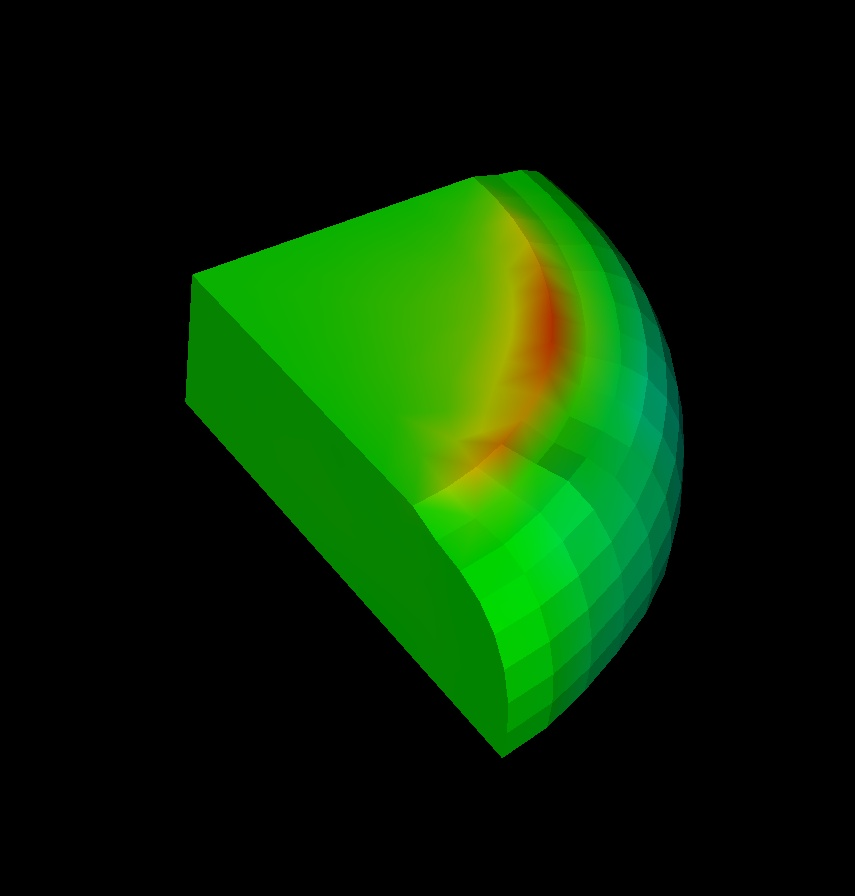
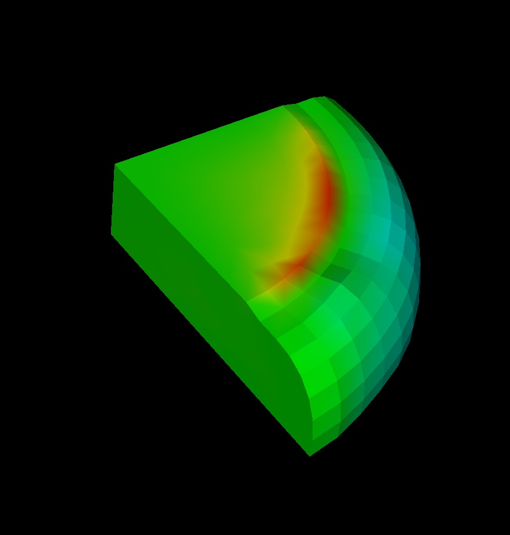
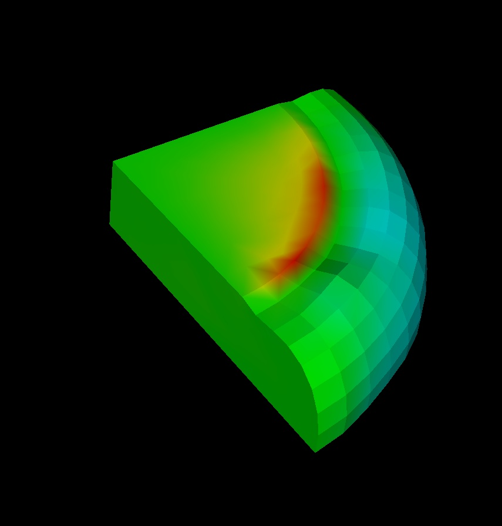

| - Ex: vtk> FlipBook delay 2 step 2
This will update the image every 2 seconds and will show every other time step. |
| - Here is an example of the images of a flip book. When the viz app is used, the images update on top of one another giving the appearance of an animation. |
|
|||
|
|
||
|
 |  | |
|  |  |  | |